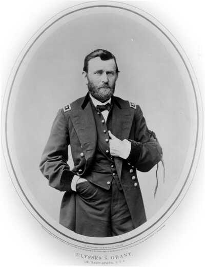

Duing the Spring and Summer of 1863, General Ulysses S Grant surrounded and laid siege to Vicksburg, Mississippi during the American Civil War.

Knowing that Vicksburg was well defended, General Grant decided that the best way to capture this key city would be to deprive them of much needed food and resourses. He belived that this would be the best way to perserve his army. So, on May 18, 1863 the seige began and would last 6 weeks.